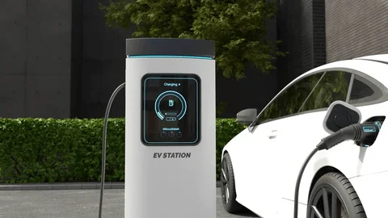
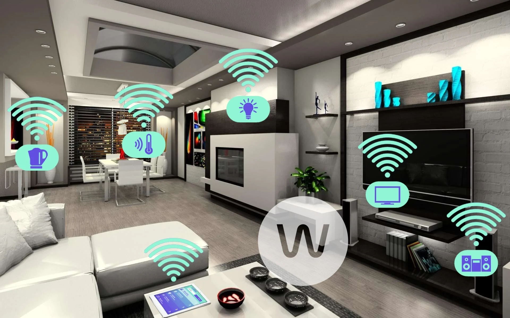
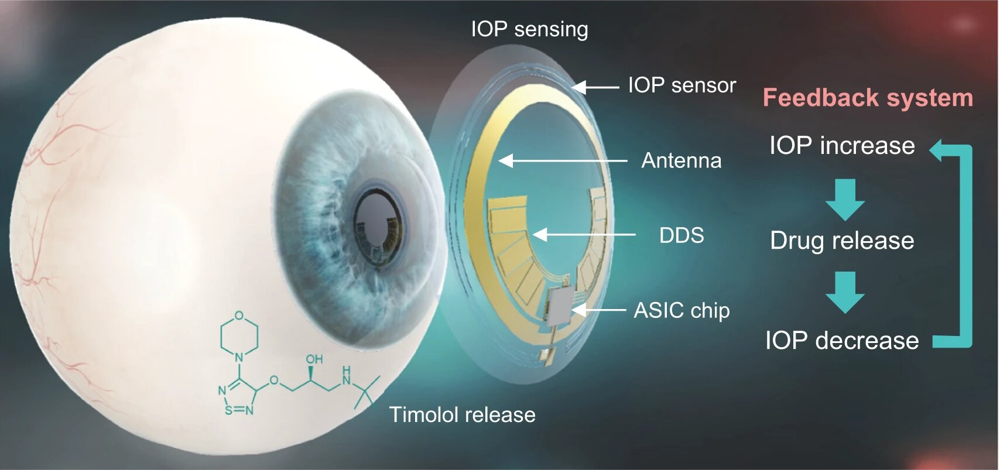
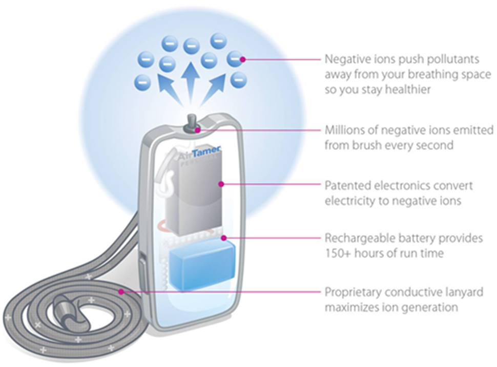
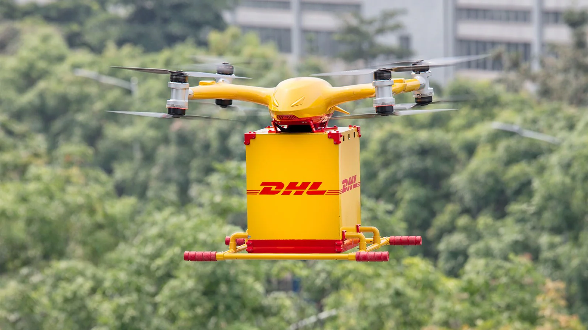
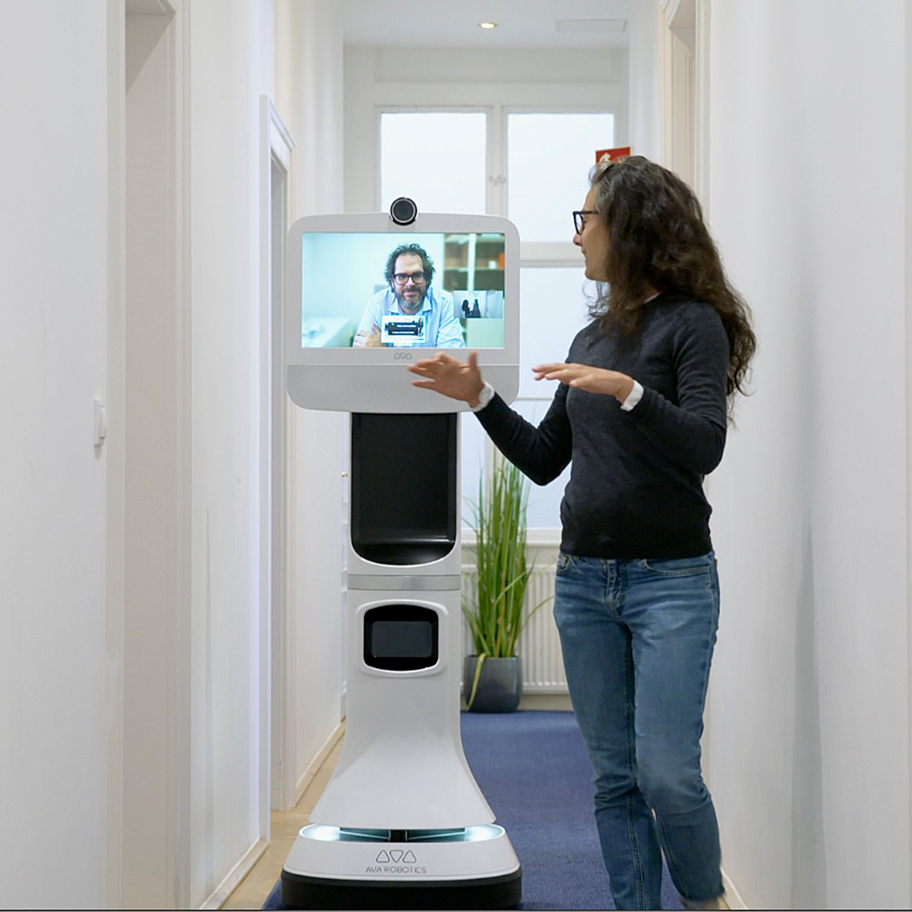
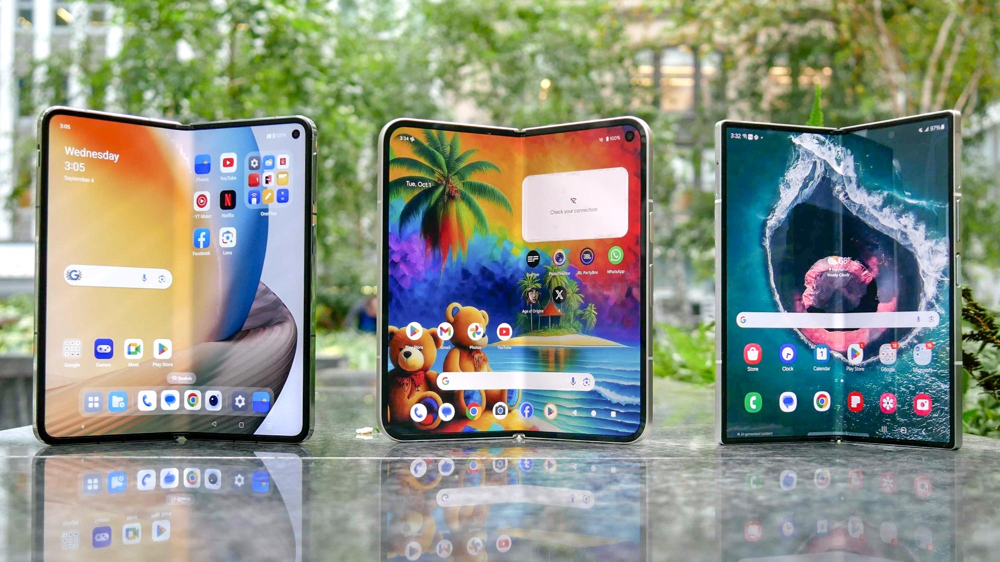
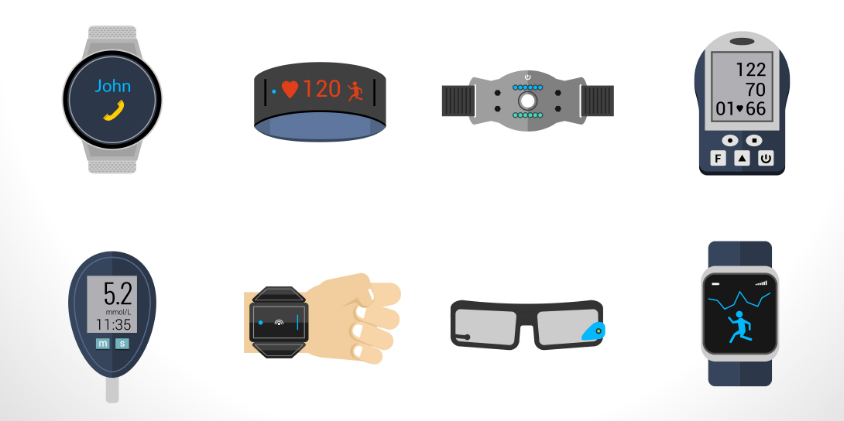

Introduction to Life-Changing Innovations
From AI to biotech, modern inventions are transforming every aspect of our daily lives, health systems, education, agriculture, and the environment.
Artificial Intelligence in Healthcare
AI is enabling quicker diagnoses, personalized treatments, and real-time monitoring, especially in remote regions.
Electric Vehicles Revolution
EVs are reducing carbon footprints, transforming transportation infrastructure, and creating cleaner cities.
3D Printing in Manufacturing
Rapid prototyping and decentralized production have become possible with 3D printing, impacting medical devices, aerospace, and fashion.

Smart Homes and IoT
IoT has connected homes for automation, efficiency, and security—changing how we interact with appliances, lights, and energy systems.
More Smarter Inventions
Smart Contact Lenses
These lenses integrate augmented reality, offering real-time information directly in your field of view.
Vertical Farming
This urban agriculture solution uses stacked layers to grow crops with less land, water, and pesticides.
Personal Air Purifiers
Wearable devices now provide clean air in polluted environments, improving respiratory health.
Drone Delivery Services
Retailers and governments are using drones to deliver essential items rapidly, especially in remote areas.
Telepresence Robots
These allow users to attend meetings, classes, or interact remotely with real-time audio/video feeds.
Foldable Smartphones
Offering compact form with expanded screens, these phones improve multitasking and portability.
Brain-Computer Interfaces
BCIs enable direct communication between the brain and external devices, revolutionizing medicine and accessibility.

Wearable Health Monitors
Advanced fitness trackers and biosensors continuously monitor vital signs and detect health anomalies early.
AI Voice Assistants in Education
From personalized tutoring to interactive learning aids, AI is transforming classroom experiences globally.

Biodegradable Electronics
Engineered for environmental safety, these gadgets dissolve naturally after disposal, reducing e-waste.